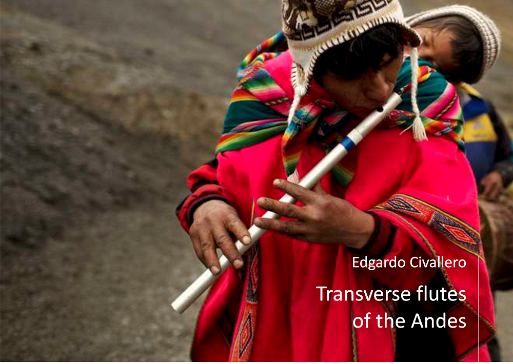

Transverse flutes of the Andes
Home > Digital books on music. Series 1 > Transverse flutes of the Andes
How to cite this work: Civallero, Edgardo (2025). Transverse flutes of the Andes. Archive edition. Bogota: El Zorro de Abajo Editora.
First edition, 2025. Archive edition, 2025 (El Zorro de Abajo Editora).
Download in PDF.
This book offers a comprehensive overview of traditional transverse flutes in the Andean mountain range, from Patagonia to Colombia. Through a combination of documentary, archaeological, and ethnographic research, it shows that these aerophones, far from being simple colonial inheritances, have older and deeper roots in the South American continent, adapted and re-signified in each region by local communities.
The text opens with a methodological and taxonomic introduction, where the classification of Andean transverse flutes is specified. It also recalls that, for a long time, the transverse flutes of the area were believed to be of European origin — descendants of the sixteenth-century military fife — although the archaeology of San Pedro de Atacama revealed the existence of at least one pre-Columbian wooden specimen, forcing a reconsideration of chronology and transmission routes.
In the far southern Andes, the study begins with the Mapuche people. In Argentina, the instrument appears as kina or kiná, made of cane or hemlock, with between four and six holes, associated with domestic contexts or minor ritual settings. In southern Chile it is called pingkullwe and is made from quila or colihue, sometimes smeared with chicken fat. Its nasal and soft sonority is associated with the feminine and medicinal universe of the machi, and it maintains a certain presence today. In northern Chile and northwestern Argentina, by contrast, transverse flutes have almost completely disappeared, except among the Ava or Chiriguano people of the Chaco, who preserve a “cross flute” called temïmbï ïe pïasa, heir to a repertoire that brings together Andean and Guaraní influences.
In Bolivia, transverse flutes are known by the names pífano, pito, or phalahuata — an Aymara term derived from "flauta."" Generally made of cane, with six holes, they are played in ensembles alongside wank'ara bass drums or other drums. They are used in traditional dances such as puli puli, machu machu, lecos, sembrador, auqui auqui, and chunchus, and also in morenada comparsas. In the province of Bautista Saavedra, La Paz, pifanada and pifaneada ensembles play pairs of flutes of different lengths tuned in complementary intervals. In Pelechuco and in the yungas, the pífano formerly accompanied now-disappeared dances, such as that of the loco palla-palla. These formations, which alternate dry blowing with deep percussion, are related to the large pinkillos and rollanos of the high plateau, integrating the ritual soundscape of the agricultural calendar.
In Peru, the variety is greater. Transverse flutes, called pitos, pífanos, flautas, or quenas traveseras, are distributed throughout the Andean territory. In Pomabamba, Áncash, and in Cusco, they are made of cane with five or six holes and are played in pairs. In Puno, the Aymara phalahuitas are also played as duets, tuned in parallel fifths and accompanied by a drum. In Cajamarca, the travesera is made of carrizo cane or elderwood, while in Sandia and Amazonas specimens with additional lower holes are recorded, showing clear Amazonian influence. The text also describes semi-closed flutes such as the chuncho pito of Sandia and the pinkullo of Ayacucho and Huánuco, hybrid instruments that oscillate between the quena and the transverse flute. In Lambayeque, an exceptional case is the kinran pinkullu, played exclusively by women, a singular phenomenon within Andean organology.
Peruvian transverse-flute ensembles — carrizo bands, war bands, or ritual comparsas — form a complex sound world. In Áncash and La Libertad they accompany local dances; in Cusco, they formed part of popular troops during the War of the Pacific and still accompany emblematic festivities such as the k'achampa or the qhapaq ch'unchu of Paucartambo. The text emphasizes the cultural resistance of these bands in the face of their replacement by brass ensembles, underlining their role as living archives of local identity.
In Ecuador, transverse flutes are called flautas de carrizo, flautas de zuro, or pífanos, and are performed solo, in pairs, or in trios. They are present in the festivities of San Juan, Corpus Christi, and Holy Week, especially in Imbabura, Pichincha, and Cotopaxi. Pairs of "male" and "female" flutes play non-tempered parallel melodies, often accompanied by side drums. The tundas or yacuchimbas of Cayambe are used in processions and agricultural rites, and are classified into three sizes corresponding to different registers. The best known, however, are the gaitas of Otavalo and Imbabura, made of cane with a central node, or muku, in which the flutes converse in pairs as living entities: the high-pitched ñañu, feminine; the low-pitched raku, masculine; and the intermediate pariku. The gaitas, considered thirsty beings that are "fed" with chicha, are played in Inti Raymi ceremonies, accompanied by horn and conch-shell trumpets, stamping, and song, as a ritual expression of cosmic balance between masculine and feminine. In the same region, the kucha — a longer and higher-pitched flute — represents the voice of the chuzalunku, a male spirit of the mountains, and is played alone, in a limited but deeply symbolic repertoire.
Finally, the book culminates in Colombia, where transverse flutes constitute the heart of the celebrated chirimías and bandas de flautas. These ensembles, made up of first and second flutes together with varied percussion — tambora, caja, maraca, charrasca, and triangle — perform bambucos, sanjuanitos, and marches. The text describes regional variants among the Yanakuna of the Colombian Massif, the Nasa or Páez of Tierradentro, the Misak or Guambiano, and the Embera-Chamí of Riosucio, each with its own ceremonial repertoire. In Popayán and Cauca, urban chirimías maintain the dual structure of lead flute and second flutes, reinforced by multiple percussion, while in Nariño, the "bandas de yegua" include the horse jawbone as a resonant idiophone. Even in Chocó, Afro-descendant communities have adopted the Andean chirimía format, adapting the repertoires to their own sonic context.
The book's closing section reaffirms the central idea that Andean transverse flutes are not simple derivations of the European fife, but the result of a prolonged acoustic, technical, and symbolic mestizaje. Throughout the mountain range, these instruments embody different forms of memory and resistance: from the Mapuche ritual breath to the collective polyphonies of Quechua and Aymara peoples, and through the peasant bands of Colombia. This work thus becomes a cartography of Andean wind, where each lateral tube embodies an ancestral voice that crosses history with the persistence of air.